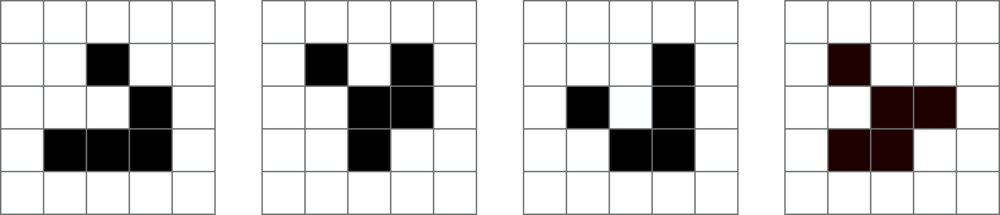
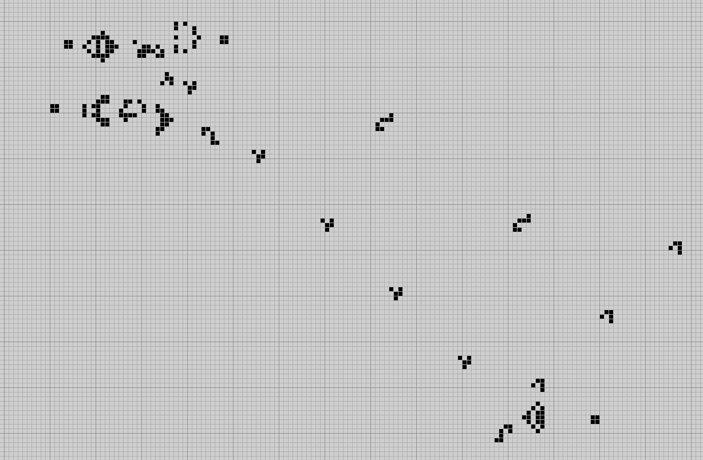

Universality in Conway's Game of Life
From my LSE Dissertation in Mathematics entitled
Turing Completeness, Logic Gates, and the Universality of Conway’s Game of Life
Dissertation PDF
Beginnings
While studying at the London School of Economics and Political Science, a large and enjoyable part of my degree was writing my dissertation under the supervision of Prof. Andy Lewis-Pye for which I recieved a distinction with 80/100. My dissertation explored the notion of Turing Universality within the Cellular Automata: Conway's Game of Life. Behind all the jargon are interesting ideas that underpin modern math and computing and also produce a visual landscape to explore these ideas.
Turing Completeness
Not every problem has a solution that can be found by following an algorithm. This idea revolutionized mathematics and computing in the 1920s and eventually lead to the idea of computational models with varied power. The Alonzo-Church Thesis unified three main theories of computability and eventually lead to the idea of Turing Completeness. A Turing complete system is theoretically capable of universal computation, with the ability to compute a solution to every computable problem. Achieving Universality is not a particularly difficult task and various systems have been proven Turing complete including various cellular automata.
Conway's Game of Life
In the 1940s Stanisław Ulam and John von Neumann began developing the idea of cellular automata. Cellular automata consist of cells in an infinite grid and a set of rules for how to update the set of each cell. These constructions have proven useful in studying biological process, physics, and computing. With each step forward in time, the cells in the grid evolve depending on the number of states, the shape of the cells, and the rules to how they evolve complex structures and modeled behaviour can arise.
Glider States in Conway's Game of Life
Invented by John H. Conway in 1970 Conway's Game of Life is a 2-dimensional 2-state cellular automata. This means that each cell lives in a 2D grid of squares and each cell is in one of two states: on or off. This cellular automata is one of the most well studied due to the complex structures and behaviours that present themselves during the evolution of the system. These complex behaviours are what make it possible to build a Turing Universal system, a system capable of universal computation.
The ideas of Turing completeness within Conway's Game of Life are fleshed out in the dissertation by building logic gates and circuits within the Game of Life using various constructions to simulate information transfer and logic. Then proving the Turing equivalence of the construction.
NOR Gate in Conway's Game of Life